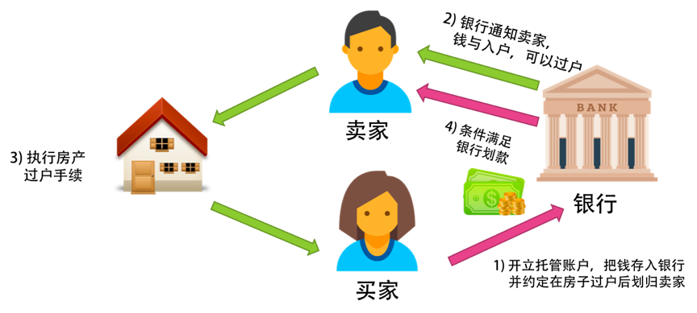
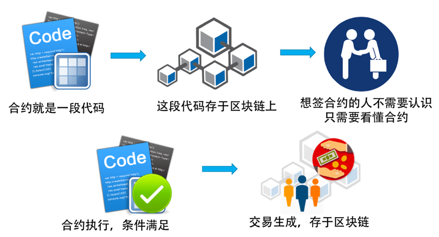
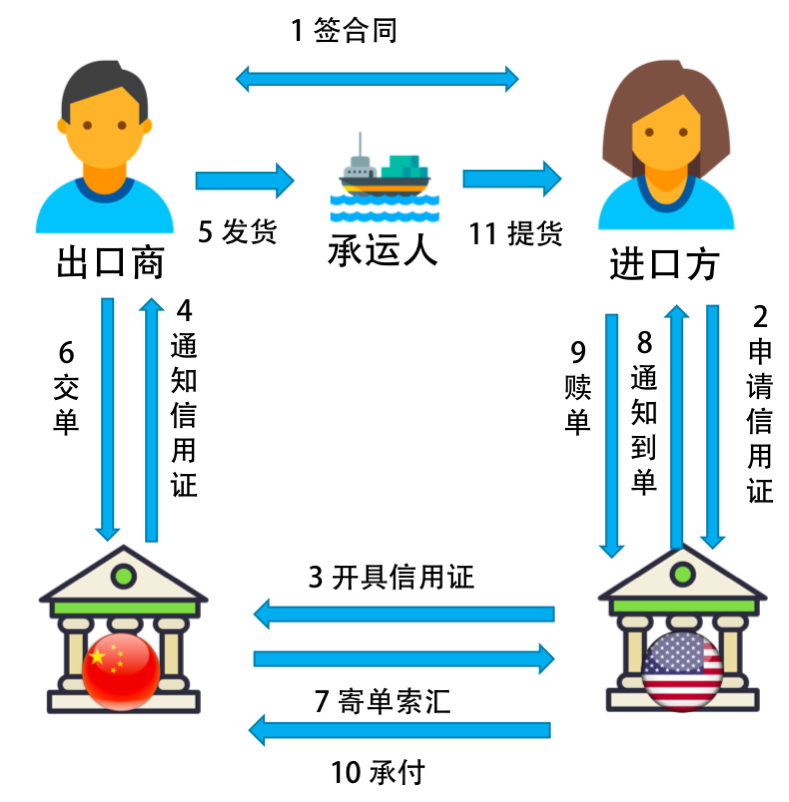

- 000 开篇词 洞悉技术的本质，享受科技的乐趣.md.html
- 001 程序员如何用技术变现（上）.md.html
- 002 程序员如何用技术变现（下）.md.html
- 003 Equifax信息泄露始末.md.html
- 004 从Equifax信息泄露看数据安全.md.html
- 005 何为技术领导力.md.html
- 006 如何拥有技术领导力.md.html
- 007 推荐阅读：每个程序员都该知道的事.md.html
- 008 Go语言，Docker和新技术.md.html
- 009 答疑解惑：渴望、热情和选择.md.html
- 010 如何成为一个大家愿意追随的Leader？.md.html
- 011 程序中的错误处理：错误返回码和异常捕捉.md.html
- 012 程序中的错误处理：异步编程和最佳实践.md.html
- 013 魔数 0x5f3759df.md.html
- 014 推荐阅读：机器学习101.md.html
- 015 时间管理：同扭曲时间的事儿抗争.md.html
- 016 时间管理：投资赚取时间.md.html
- 017 故障处理最佳实践：应对故障.md.html
- 018 故障处理最佳实践：故障改进.md.html
- 019 答疑解惑：我们应该能够识别的表象和本质.md.html
- 020 分布式系统架构的冰与火.md.html
- 021 从亚马逊的实践，谈分布式系统的难点.md.html
- 022 分布式系统的技术栈.md.html
- 023 分布式系统关键技术：全栈监控.md.html
- 024 分布式系统关键技术：服务调度.md.html
- 025 分布式系统关键技术：流量与数据调度.md.html
- 026 洞悉PaaS平台的本质.md.html
- 027 推荐阅读：分布式系统架构经典资料.md.html
- 028 编程范式游记（1）- 起源.md.html
- 029 编程范式游记（2）- 泛型编程.md.html
- 030 编程范式游记（3） - 类型系统和泛型的本质.md.html
- 031 Git协同工作流，你该怎样选.md.html
- 032 推荐阅读：分布式数据调度相关论文.md.html
- 033 编程范式游记（4）- 函数式编程.md.html
- 034 编程范式游记（5）- 修饰器模式.md.html
- 035 编程范式游记（6）- 面向对象编程.md.html
- 036 编程范式游记（7）- 基于原型的编程范式.md.html
- 037 编程范式游记（8）- Go 语言的委托模式.md.html
- 038 编程范式游记（9）- 编程的本质.md.html
- 039 编程范式游记（10）- 逻辑编程范式.md.html
- 040 编程范式游记（11）- 程序世界里的编程范式.md.html
- 041 弹力设计篇之“认识故障和弹力设计”.md.html
- 042 弹力设计篇之“隔离设计”.md.html
- 043 弹力设计篇之“异步通讯设计”.md.html
- 044 弹力设计篇之“幂等性设计”.md.html
- 045 弹力设计篇之“服务的状态”.md.html
- 046 弹力设计篇之“补偿事务”.md.html
- 047 弹力设计篇之“重试设计”.md.html
- 048 弹力设计篇之“熔断设计”.md.html
- 049 弹力设计篇之“限流设计”.md.html
- 050 弹力设计篇之“降级设计”.md.html
- 051 弹力设计篇之“弹力设计总结”.md.html
- 052 区块链技术 - 区块链的革命性及技术概要.md.html
- 053 区块链技术 - 区块链技术细节 - 哈希算法.md.html
- 054 区块链技术 - 区块链技术细节 - 加密和挖矿.md.html
- 055 区块链技术 - 去中心化的共识机制.md.html
- 056 区块链技术 - 智能合约.md.html
- 057 区块链技术 - 传统金融和虚拟货币.md.html
- 058 管理设计篇之分布式锁.md.html
- 059 管理设计篇之配置中心.md.html
- 060 管理设计篇之边车模式.md.html
- 061 管理设计篇之服务网格.md.html
- 062 管理设计篇之网关模式.md.html
- 063 管理设计篇之部署升级策略.md.html
- 064 性能设计篇之缓存.md.html
- 065 性能设计篇之异步处理.md.html
- 066 性能设计篇之数据库扩展.md.html
- 067 性能设计篇之秒杀.md.html
- 068 性能设计篇之边缘计算.md.html
- 069 程序员练级攻略（2018）：开篇词.md.html
- 070 程序员练级攻略（2018）：零基础启蒙.md.html
- 071 程序员练级攻略（2018）：正式入门.md.html
- 072 程序员练级攻略（2018）：程序员修养.md.html
- 073 程序员练级攻略（2018）：编程语言.md.html
- 074 程序员练级攻略：理论学科.md.html
- 075 程序员练级攻略（2018）：系统知识.md.html
- 076 程序员练级攻略（2018）：软件设计.md.html
- 077 程序员练级攻略（2018）：Linux系统、内存和网络.md.html
- 078 程序员练级攻略（2018）：异步IO模型和Lock-Free编程.md.html
- 079 程序员练级攻略（2018）：Java底层知识.md.html
- 080 程序员练级攻略（2018）：数据库.md.html
- 081 程序员练级攻略（2018）：分布式架构入门.md.html
- 082 程序员练级攻略（2018）：分布式架构经典图书和论文.md.html
- 083 程序员练级攻略（2018）：分布式架构工程设计.md.html
- 084 程序员练级攻略（2018）：微服务.md.html
- 085 程序员练级攻略（2018）：容器化和自动化运维.md.html
- 086 程序员练级攻略（2018）：机器学习和人工智能.md.html
- 087 程序员练级攻略（2018）：前端基础和底层原理.md.html
- 088 程序员练级攻略（2018）：前端性能优化和框架.md.html
- 089 程序员练级攻略（2018）：UIUX设计.md.html
- 090 程序员练级攻略（2018）：技术资源集散地.md.html
- 091 程序员面试攻略：面试前的准备.md.html
- 092 程序员面试攻略：面试中的技巧.md.html
- 093 程序员面试攻略：面试风格.md.html
- 094 程序员面试攻略：实力才是王中王.md.html
- 095 高效学习：端正学习态度.md.html
- 096 高效学习：源头、原理和知识地图.md.html
- 097 高效学习：深度，归纳和坚持实践.md.html
- 098 高效学习：如何学习和阅读代码.md.html
- 099 高效学习：面对枯燥和量大的知识.md.html
- 100 高效沟通：Talk和Code同等重要.md.html
- 101 高效沟通：沟通阻碍和应对方法.md.html
- 102 高效沟通：沟通方式及技巧.md.html
- 103 高效沟通：沟通技术.md.html
- 104 高效沟通：好老板要善于提问.md.html
- 105 高效沟通：好好说话的艺术.md.html
- 106 加餐 谈谈我的“三观”.md.html
- 107 结束语 业精于勤，行成于思.md.html
056 区块链技术 - 智能合约
民间担保
要讲清楚智能合约，我先给你看几个案例。第一个案例是打赌。比如，张三和李四打赌，周末拜仁和皇马的足球比赛谁会赢。如果拜仁赢了，张三给李四 100 元；如果反过来，李四给张三 100 元；如果打成平局，则不赢不输。
张三和李四都怕对方不认账，所以，他们需要找一个他们都信得过的人来做公证，两人都把 100 元钱给这个公证人。然后，如果拜仁赢了，公证人把全部 200 元给李四；如果皇马赢了，则全部给张三；如果是平局，则分别退还 100 元。

上面这个模型什么都好，就是有一个问题，这个 " 公证人 " 跑路了怎么办？因为他们只赌 100 元，公证人犯不着为了 200 元跑路。但是，如果有一万人把赌金交给公证人呢？如果张三李四赌金在 100 万呢？公证人的人性会受到极大的挑战，他还有这么可信吗？
银行的资金托管业务
也就是说，当业务大到一定程度的时候，个人的信用是不足以来当中间公证人这个角色了。这时，你要找更为靠谱的机构，这个机构叫银行，银行的信用等级至少在这几方面上要比个人高。
- 银行是机构，所以受政府监管，受法律约束。
- 银行的钱很多，就算是里面有员工作案，银行也赔得起。
- 银行里有比较安全的资金管理流程和措施。
因此，银行的受信程度很高，可以来做担保。
下面，我们来看一个示例，银行在二手房交易中的 " 资金托管 " 业务。因为房屋交易时涉及到的资金数目太大，买家怕交了钱后，卖家不过户，卖家也怕过了户后，买家不给钱。而一般像 " 链家 " 或是 " 我爱我家 " 这样的房屋中介是没有能力来做大额交易的担保的（政府也不会让它们来做）。
于是银行就出来了。买家先到银行开个户，把购房款全额存进去。这个账户和一般的账户不一样，这叫资金托管账户，钱一旦进入后，你就取不出来了，除非满足了某个条件。在开户时，房屋的买卖方和银行三方约定，一旦房产证从卖家过户到买家 30 天后没有纠纷，钱就划给卖家了。

这其实跟在淘宝上买东西差不多，买家把钱转给支付宝，然后买家确认收到货后，在支付宝上点确认，钱就划给商家了。唯一不一样的是，支付宝没有资格担保像房屋交易这么大的交易金额。这是国家为了防范相关的金融风险所采取的措施。
以太坊的智能合约
对于以太坊来说，智能合约其实就是一段可执行的程序片段，由发布人使用一种类似于 JavaScript 或是 Python 的编程语言来编写。就像最开始那个民间担保的案例一样，合同的发布可以写成如下形式：
Contract MyContract{
function transferFrom( address _from, address _to, uint256 _value) {
if ( isBayernWin ) {
blanceOf[_from] += _value
blanceOf[_to] -= value
}else if ( isRealMadridWin ) {
blanceOf[_from] -= _value
blanceOf[_to] += value
}
}
}
嗯，合同都要用代码来写了。看来，我程序员离统治世界又进了一步。
我们把合约代码在本地编译成功后发布到区块链上，可以理解为一个特殊的交易（包括可执行代码），然后会被矿工打包记录在某一个区块中。当需要调用这个智能合约的方法时只需要向这个智能合约的地址发送一笔交易即可。
每个节点的电脑都需要安装以太坊客户端，客户端自带了一个和 JVM 类似的一个 EVM。通过交易触发智能合约后，智能合约的代码就会在 EVM 中执行了。这种方式相当于把程序部署到了非常非常多的电脑上，随时都可以通过交易来触发这些智能合约的执行，也从而完成了分布式程序的部署和调用。

这感觉就是 Funciton-as-a-Service 的一种实现啊。
如果人与人之间的交易条件（合约）就像代码一样被严格地执行，你觉得这个世界会变成什么样呢？是不是会少一些无赖，少一些扯皮，多了很多效率，多了很多确定性呢？
有银行担保的国际业务
我们再来看一个国际贸易的流程。
假如中国某出口商和美国一个进口方做生意，会遇到货币不一样的问题。如果没有货币兑换，那就只有通过大家都认可的黄金交易了。你给我发一船货，我给你发一船黄金，风险也高，交易的效率非常低下。
如果有银行在中间协调，比如中国的某个银行和美国的某个银行签了互信协议，那么国际贸易的银行担保流程如下。下面是描述这一过程的图片。

- 首先，出口商和进口商签订买卖合同。
- 然后，美国的进口方到美国银行那边申请信用证（信用证需要用钱来开的，也是有价格属性的，比如 200 万美金的信用证，就需要用 200 万美金来申请）。
- 美国的银行向中国银行开具信用证，中国银行根本不关心进口方有没有把钱给了美国银行，反正你开了 200 万美金面额的信用证，我以后要问你要钱的。
- 中国银行收到信用证后，给出口商发出通知信用证，告之可以发货。
- 出口商发货，由相关承运人从中国把货运到美国。
- 然后，中国出口商把提货单交给中国的银行。
- 中国的银行向美国银行发出 " 寄单索汇 " 业务。
- 美国银行收到提货单后，通知进口方到单。
- 进口方把货款的钱补完，比如补 300 万美金 " 赎回 " 提货单。
- 然后美国银行向中国银行付款。
- 美国进口方到承运人提货。
看看，这个过程如此复杂，而且很机械，感觉完全可以用程序来实现。如果用以太坊的智能合约来写一下，这段代码会写成什么样呢？
好像可以写得很简单。
- 进口方把钱垫到区块链上。
- 出口方发货方发货。
- 进口方验货后，钱就到了出口方。
当然，这其上有一些事也需要写在程序中。
- 一个是进口方的钱垫到区块链上，就需要被冻结掉。
- 另外还需要物流信息，不然，进口方说没有收到，不好验证。但物流信息要是造假怎么办？
- 另一个是需要把进口方验货的标准给写进来。代码不知道条件怎么满足，也许需要进口方那边点个确认。如果不点确认，则有个过期时间，时间一到就自动确认。
- 另外，如果进口方觉得有问题，需要退货，或是需要重新议价，那么需要相关的关联合同。
其中，比较难办的是第 2 步，需要其他方也进入区块链。如果不进来，这事就不好玩了。但是，物流信息怎么才能做到真实可靠的呢？这需要双方选择一个都相信的中心化的物流公司，还是我们搞一个去中心化的物流公司？去中心化的物流公司是个什么形态，你能想像得出来吗？我想象不出来。
合同的 Bug
另外，我们要小心智能合同。有程序的地方就会有 Bug，现实生活中会有 Bug，合同也会有 Bug。出现了 Bug 后，大家可以相互协商，给合同打补丁（附加条款，或是重新签合同）。然而，代码合同则不一样，Bug 也会被残酷无情地执行，一旦执行就很难补救了。
最著名的例子就是以太坊一个叫 The DAO 的应用，它是一个去中心化的风险投资基金，以智能合约的形式运行在以太坊区块链上。它也是一个盈利性的去中心化自治组织，它将利用自己掌控的以太币资金通过投资以太坊上的应用为其成员创造价值。在 The DAO 创建期，任何人都可以向它的众筹合约发送以太币，获得 DAO 代币。
因为 The DAO 这个程序写得不好，黑客在其智能合约里找到 Bug，把所有的钱给调走了，大约 7000 多万美刀。这成为有史以来最大宗的数字劫案，而且 FBI 也找不到人。这个项目因为钱被偷走而倒闭以后，引起了以太坊的强行分叉，变成 ETH 和 ETC。关于技术细节可参见其 漏洞分析文章，整个事件的始未可以参见《彭博社深度还原：The DAO 大劫案始末》。
还有一个案例，是 2017 年发生的智能钱包（多签名钱包）Parity 被盗事件。它号称自己的智能合约被很多很厉害的安全人员都审查过，都认为没问题。但最后还是被黑客利用了一个叫做 initwallet 的函数，反复调用它，转走了 3000 万美金。
老实说，我觉得任何合同都是会有 Bug 的，无论是在现实生活中，还是在代码中。唯一的不同是，现实生活中的合同出现 Bug，可以自行协商解决，也可以通过法律或仲裁的方式解决。然而，在数字社会中，代码无论好坏都会被计算机残酷无情地严格执行。
有时候，当你是利益方时，你会觉得是好事。但有时候，你是受害方时，你还是会想有挽回的余地。现实生活中可以做到，但我不知道代码世界中的合同如何解决这些 Bug，所以还是不要叫 " 智能合约 "，至少现在还不是。